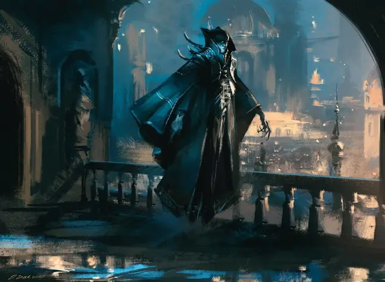

Вампир пьющий разум
Mind Drinker Vampire
Средняя Нежить, нейтрально-злая

Класс Доспеха 14
Хиты 55 (10к8 + 10)
Скорость 30 футов, летая 30 футов (парит)
| мод | спас | ||
|---|---|---|---|
| СИЛ | 16 | +3 | +3 |
| ЛОВ | 18 | +4 | +6 |
| ТЕЛ | 12 | +1 | +1 |
| мод | спас | ||
|---|---|---|---|
| ИНТ | 19 | +4 | +6 |
| МДР | 13 | +1 | +3 |
| ХАР | 14 | +2 | +2 |
Навыки Восприятие +3, Обман +4, Проницательность +3, Скрытность +6
Сопротивление урону некротическая энергия
Чувства тёмное зрение 60 футов, пассивное Восприятие 13
Языки известные при жизни
Опасность 4 (1100 опыта)
Бонус мастерства +2
Особенности
Врожденное колдовство (псионика). Базовой характеристикой заклинаний вампира является Интеллект (Сл спасброска от заклинания 14). Он может накладывать следующие заклинания, не требуя компонентов:
• Неограниченно: сообщение [message];
• 3/день каждое: очарование личности [charm person], удержание личности [hold person], отражения [mirror image], усыпление [sleep];
• 1/день каждое: газообразная форма [gaseous form], образ [major image].
Скрытность в тенях. Находясь в тусклом свете или в темноте, вампир может бонусным действием совершить действие Засада.
Чувствительность к солнечному свету. Находясь на солнечном свету, вампир совершает с помехой броски атаки, а также проверки Мудрости (Восприятие), полагающиеся на зрение.
Действия
Мультиатака. Вампир совершает две атаки, только одна из которых может быть атакой Укусом.
Укус. . Рукопашная атака оружием: +6 к попаданию, досягаемость 5 фт., одно согласное существо или существо, схваченное вампиром, недееспособное или опутанное. Попадание: 7 (1к6 + 4) колющего урона плюс 7 (2к6) урона некротической энергией. Максимум хитов цели уменьшается на величину, равную полученному урону некротической энергией, и вампир восстанавливает хиты, равные этому значению. Снижение длится до тех пор, пока цель не закончит продолжительный отдых. Цель умирает, если ее максимум хитов снижается до 0.
Безоружный удар. . Рукопашная атака оружием: +6 к попаданию, досягаемость 5 фт., одна цель. Попадание: 8 (1к8 + 4) дробящего урона. Вампир также может схватить цель (Сл высвобождения 13), если это существо и у вампира есть свободная рука.
Вытягивание разума (перезарядка 5–6). Вампир нацеливается на существо, которое он может видеть в пределах 30 футов от себя. Цель должна совершить спасбросок Интеллекта Сл 14, если вампир ранее пил кровь цели этот спасбросок совершается с помехой. При провале цель получает 28 (8к6) урона психической энергией, и вампир различает поверхностные эмоции и мысли цели. При успешном спасброске цель получает половину урона, и вампир различает общее эмоциональное состояние цели, но не ее мысли.
Описание
Когда вампиры присоединяются к Дому Димиров, они могут научиться выкачивать ментальную энергию и воспоминания вместе с кровью своих жертв. Они также изучают магию, излюбленную димирскими магами разума, что дает им мощную комбинацию способностей, идеально подходящую для шпионажа и проникновения.
Наследники Задека. Основатель Дома Димир, Задек, был первым из так называемых пьющие разум. Его секреты передаются только другим членам его гильдии, и пьющие разум, покидающие Дом Димиров, становятся врагами гильдии — единственное исключение из правила, запрещающего пьющим разум питаться другими себе подобными.
Лидеры ячеек. Благодаря особым дарам, пьющие разум часто становятся лидерами небольших ячеек тайных оперативников димиров. Однако они редко доверяют своим агентам и часто следуют за членами своей ячейки, чтобы убедиться, что эти члены выполняют миссии в соответствии с приказом. Самые подозрительные вампиры могут даже выкачивать мысли из своих подчиненных, чтобы обнаружить любой намек на предательство.
Вампиры
Порождения ночи, вампиры — нестареющие нежити, питающиеся кровью живых. Это свирепые хищники, которые маскируют свою ненасытную жажду за фасадом изощренности и чувственности. Те, кто пьют кровь из золотых чаш, не менее прожорливы, чем те, кто перегрызает горло своим жертвам своими клыками; они просто лучше скрывают это.
Вампиры Равники существенно отличаются от вампиров из «Бестиария». Им не хватает черт и способностей, которыми могут похвастаться другие вампиры, но также нет и слабостей, которые мешают таким вампирам. Что их объединяет, так это неутолимая жажда крови, которая поддерживает их нежить.